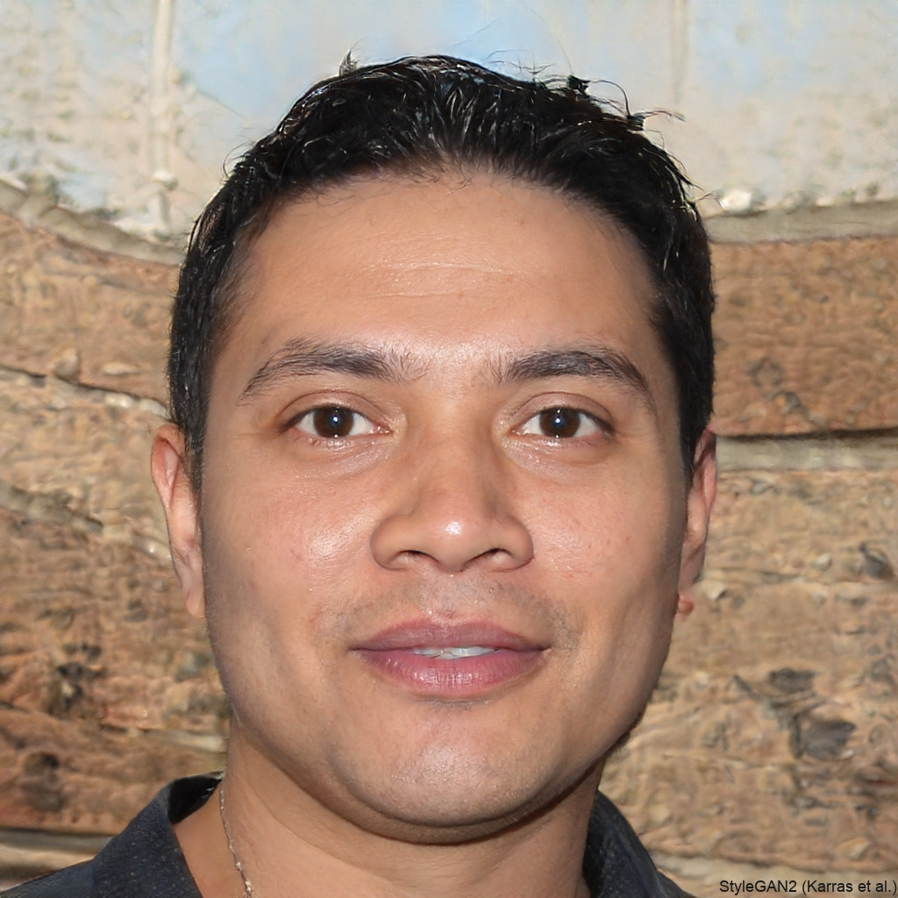

Curriculum Vitae - Antoine IUNG

Informations Personnelles
Adresse : 7 rue Christian Pfister, 68200, Mulhouse
Téléphone : 06 95 10 68 21
Email : antoine.t.iung@gmail.com
Diplômes et Formations
- Baccalauréat général (), mention bien
- - Présent : Faculté de Mathématiques et Informatique, Strasbourg
Étudiant en 1ère année de Licence Mathématiques et Informatique
- - : Lycée Louis Pasteur, Strasbourg
Terminale, spécialités NSI et Mathématiques
- - : Lycée Privé Jeanne d'Arc, Mulhouse
Seconde et Première générales (spécialités NSI, Mathématiques, Physique-Chimie)
Compétences et Connaissances
- HTML, CSS, JavaScript
- Bonne maîtrise du développement web
- Programmation en Python, C, C++
- Expérience en développement logiciel

- Base de données (SQL, SGBD)
- Création et gestion de bases de données
- Langues
- Anglais technique, Allemand intermédiaire
Expériences Professionnelles
Stages de découverte professionnelle
| Période |
Entreprise |
Mission |
| Terminale |
ActInVision, Strasbourg |
Stage de découverte professionnelle |
| 3ème |
DH KUBLER, Staffelfelden |
Stage de découverte professionnelle |
| Fin des expériences professionnelles |
Centres d'Intérêt
- Développement de logiciels et algorithmes
- Participation à des compétitions de tir sportif
- Lecture et vulgarisation scientifique
- Voyages et découverte de nouvelles cultures
Autres Compétences
- Rédaction technique
- Gestion de projet
Projets Réalisés
Développement d'un site e-commerce fictif pour un projet universitaire.
Objectifs Professionnels
Développer des compétences en intelligence artificielle et en développement logiciel.
Informations Complémentaires
Disponible pour des opportunités de stage et de collaboration.